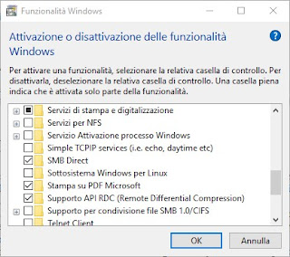

2. First step to set-up your machine¶
2.1. Set-up your terminal machine¶
2.1.1. Set-up for Windows users¶
If you a have a Windows-based computer you must download the app of Ubuntu in the Microsoft Store.
After that you have to enable the use of Linux in Windows: - From the Start menu, search “Programmi e funzionalità”. - Go to the menu “Attivazione/disattivazione delle funzionalità Windows”. - Check the box “Sottosistema Windows per Linux” to enable it (see the figure below).
Now you can open the app Ubuntu and use the textual shell bash in the terminal. Here you can find a quick reference to the basic commands in bash.
2.1.2. Set-up for Mac OSX users¶
Mac OS has already a Terminal app. Open it and make sure that you have the Command Line Tools installed by typing the following command:
xcode-select --install
The Command Line Tools package will be installed in your Mac, so that you can use the standard commands to work in the shell.
2.2. Install Miniconda to work on your local machine¶
Here you can find a quick reference to the basic commands in bash.
To work locally (on your computer) you will have to install several programs and software packages. This can be done with a package manager Miniconda. For Windows users, to install Miniconda type the following commands:
wget https://repo.anaconda.com/miniconda/Miniconda3-py39_4.10.3-Linux-x86_64.sh
bash Miniconda3-py39_4.10.3-Linux-x86_64.sh
for Mac-OS users type:
curl -O https://repo.anaconda.com/miniconda/Miniconda3-latest-MacOSX-x86_64.sh
bash Miniconda3-latest-MacOSX-x86_64.sh
Follow the procedure (type always yes if asked) and when asked about executing conda init type yes. Miniconda automatically installs also Python 3.
2.3. Create an environment with Conda¶
A conda environment is a directory that contains a specific collection of conda packages that you have installed. For example, you may have one environment with Python 2 and its dependencies, and another environment with Python 3. Environments and all programs inside an environment are independent from programs belonging to another environment. Find here more information on Conda environments.
Here we will create an environment called bioinf, where we will install most of the programs that we will use.
conda create --name bioinf
After creating the environment, activate it by typing the following command (and this must be don everytime you want to activate the environment)
conda activate bioinf
To deactivate the environment
conda deactivate
2.4. Install packages inside the environment¶
You will install most of the programs that we will use in the bioinf environment, so first of all activate the environment.
conda activate bioinf
Install FastQC:
conda install -c bioconda fastqc
Install Adapter Removal
conda install -c bioconda adapterremoval
Install BWA:
conda install -c bioconda bwa
Install Picard:
conda install -c bioconda picard
Install Samtools:
conda install -c bioconda samtools
If you have troubles with the installation of Samtools try these commands:
conda config --add channels bioconda
conda config --add channels conda-forge
conda install samtools==1.11
Install Dedup:
conda install -c bioconda dedup
We will provide a version of GATK 3.8 (file GenomeAnalysisTK.jar).
Download the IGV Genome browser on you computer, just press the link and download the version for your computed (Mac-OS or Windows).